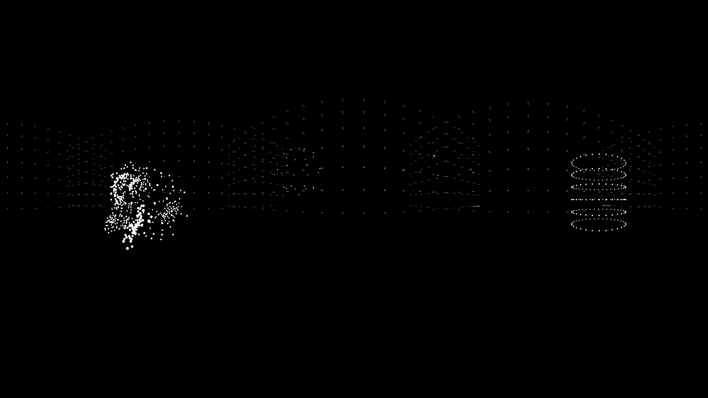

<!DOCTYPE html>
<html lang="fr">

<head>
  <meta charset="utf-8">
  <meta http-equiv="X-UA-Compatible" content="IE=edge">
  <meta name="viewport" content="width=device-width, user-scalable=no, minimum-scale=1.0, maximum-scale=1.0">
  <title>Voilà ce que je peux faire !</title>
  <script src="https://aframe.io/releases/1.1.0/aframe.min.js"></script>
  <script src="https://rawgit.com/donmccurdy/aframe-extras/master/dist/aframe-extras.loaders.min.js"></script>
  <script src="https://unpkg.com/aframe-event-set-component@3.0.3/dist/aframe-event-set-component.min.js"></script>
  <script src="https://wizgrav.github.io/aframe-effects/dist/aframe-effects.js"></script>


  <script>
    // AFRAME.registerComponent('model_loaded', {
    //     init: function() {
    //         var el = this.el;
    //         el.addEventListener('model-loaded', () => {
    //             console.log(">>>> modele chargé "+el.id);
    //         });
    //         el.addEventListener('model-error', () => {
    //               console.log(">>>> modele erreur"+el.id);
    //             });
    //     }
    // });

    AFRAME.registerComponent('unlit', {
      init: function() {
        function recursivelySetChildrenUnlit(mesh) {

          if (mesh.material && mesh.material.map) {
            mesh.material = new THREE.MeshBasicMaterial({
              map: mesh.material.map
            });
          }

          if (mesh.children) {
            for (var i = 0; i < mesh.children.length; i++) {
              recursivelySetChildrenUnlit(mesh.children[i]);
            }
          }
        }

        this.el.addEventListener('model-loaded', (e) => {

          const mesh = e.target.getObject3D('mesh');
          for (var i = 0; i < mesh.children.length; i++) {
            recursivelySetChildrenUnlit(mesh.children[i]);
          }

        });
      }
    });
  </script>

</head>

<body style='margin : 0px; overflow: hidden;' onload="Start();">

  <!-- SCENE AFRAME -->
  <a-scene background="color: skyblue" renderer="antialias: true;
                           colorManagement: true;
                           foveationLevel : 3;
                           highRefreshRate: true;
                           physicallyCorrectLights: true;">
    <a-asset-item id="glbmonde" src="./assets/models/vertices.glb"></a-asset-item>


    <!-- CHARGEMENT DES ASSETS -->
    <!-- <a-assets>
      
    </a-assets> -->


    <!-- ECLAIRAGES -->
    <!-- <a-entity light="type: ambient; color: #fffcf0; intensity: 5"></a-entity> -->
    <a-entity light="type: directional; castShadow:true; intensity: 4 " position="-6.112 17.857 -8.113"></a-entity>
    <a-entity light="type: directional; castShadow:true; intensity: 4 " position="7.169 17.857 -0.405"></a-entity>
    <a-entity light="type: point; castShadow:true; intensity: 4 " position="0 2 0"></a-entity>


    <a-sky src="./assets/hdri_vertices.png" position="-2.06 10 -20" rotation="0 95 0"></a-sky>

    <a-camera position="0 1.6 0" rotation="0 0 0"></a-camera>

  </a-scene>

  </script>

</body>

</html>


<!-- <!DOCTYPE html> -->
<!-- <html>
  <head>
    <meta charset="utf-8">
    <title>Hello, WebVR! • A-Frame</title>
    <meta name="description" content="Hello, WebVR! • A-Frame">
    <script src="https://aframe.io/releases/1.1.0/aframe.min.js"></script>
  </head>
  <body>
    <a-scene background="color: #FAFAFA">
      <a-box position="-1 0.5 -3" rotation="0 45 0" color="#4CC3D9" shadow></a-box>
      <a-sphere position="0 1.25 -5" radius="1.25" color="#EF2D5E" shadow></a-sphere>
      <a-cylinder position="1 0.75 -3" radius="0.5" height="1.5" color="#FFC65D" shadow></a-cylinder>
      <a-plane position="0 0 -4" rotation="-90 0 0" width="4" height="4" color="#7BC8A4" shadow></a-plane>
    </a-scene>
  </body>
</html> -->
